February Papers: Thinking Depth, Latent Actions, Quantization and Riemannian Flows
The stream of papers never ends, even so, in February our team found 4 we'd like to share:
-
Think Deep, Not Just Long: Measuring LLM Reasoning Effort via Deep-Thinking Tokens investigates how many layers are actually needed for each token during autoregressive LM rollouts.
-
Factored Latent Action World Models takes videos that contain multiple objects, and instead of encoding them into one latent state for the whole scene, employs one latent state per object.
-
LATMiX: Learnable Affine Transformations for Microscaling Quantization of LLMs generalises Hadamard transforms to better handle outliers when block-quantizing LLMs.
-
Riemannian Mean Flow extends MeanFlow for generating proteins within the corresponding structured spaces, e.g. the space of all residue positions and orientations.
We hope you enjoy this month's papers as much as we did! If you have thoughts or questions, please reach out to us at @GCResearchTeam.
Think Deep, Not Just Long: Measuring LLM Reasoning Effort via Deep-Thinking Tokens
The key idea
Reasoning models have demonstrated improved task performance when compared to their non-reasoning counterparts. This is largely attributed to reasoning models breaking down problems and working through them step-by-step, a by-product of which is an increased sequence length. Yet, it is not always clear that a longer sequence length correlates with better task performance. This work examines the presence of deep-thinking tokens (tokens in which internal predictions undergo large changes throughout model layers prior to convergence) within the reasoning trace and the proportion of the trace that consists of these deep-thinking tokens (the deep-thinking ratio). The authors find strong correlation between the deep-thinking ratio and task performance, and use this to propose a strategy for test-time scaling.
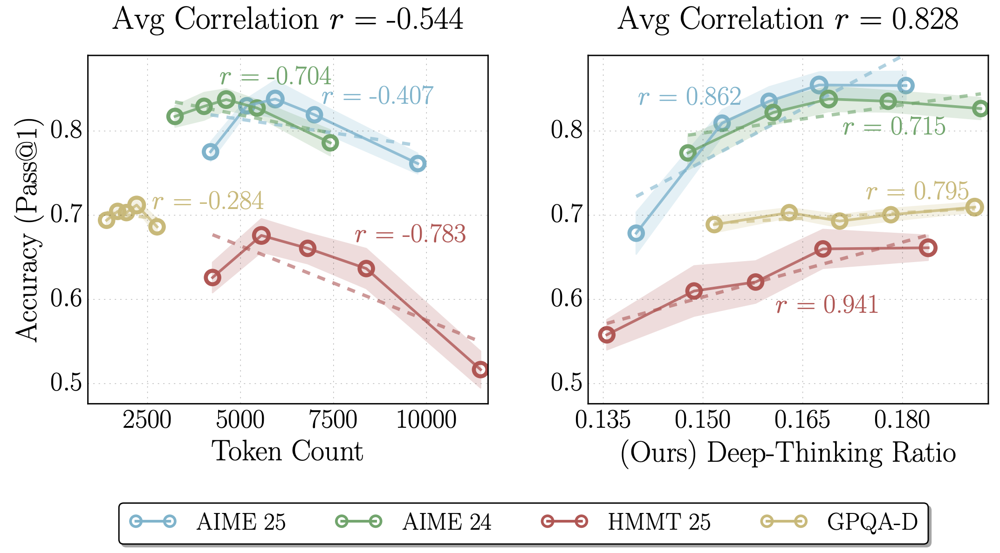
Background
Over the last 18 months, numerous works have suggested that increasing the number of reasoning tokens increases task performance (including DeepSeek-R1, OpenAI o1, Qwen3, Claude 3.7 Sonnet, Claude Opus 4 & Sonnet 4). However, there is growing evidence indicating that raw token count is an unreliable indicator — the authors of this work propose a new measure which is more correlated with model performance.
Their method
The authors propose measuring the probability distribution over the vocabulary after each intermediate hidden state, rather than just the final state. For each layer \(l=\{1, \cdots L-1\}\) and generation step \(t\), the probability distribution \(p_{t,l}\) is given by \(\mathrm{softmax}(W_U h_{t, l})\) where \(h_{t, l}\) is the layer's hidden state and \(W_U \in \mathbb{R}^{|V| \times d}\) in the language modeling head to produce logits over the vocabulary. The final layer's probability distribution is given by \(p_{t, L}\).
The authors posit that tokens with distributions that stabilise in deeper layers corresponds to needing more extended internal thinking, wheras distributions that stabilise quickly do not benefit from additional thinking. They measure how long a token's distribution takes to stabilise by considering the Jensen-Shannon divergence (JSD) between \(p_{t,l}\) and \(p_{t, L}\): $$ D_{t, l} := \mathrm{JSD}(p_{t,L} \parallel p_{t, l}) = H\bigg(\frac{p_{t,L} + p_{t,l}}{2}\bigg) - \frac{1}{2}\big(H(p_t, L) + H(p_t, l)\big) $$ where \(H(\cdot)\) denotes Shannon entropy.
The depth in which the model has "settled" is defined as
where \(\bar{D}_{t, l} = \displaystyle\min_{j\leq l}{D}_{t, j}\) defines what a layer has settled at and \(g\) is a fixed threshold.
If the settling depth is within later layers (determined by a depth fraction \(\rho\)), it is considered to be a deep-thinking token. The proportion of these tokens across the overall generated sequence determines the deep-thinking ratio. The authors find that this metric correlates with task performance much more strongly than other metrics such as sequence length (see Table 1 below).
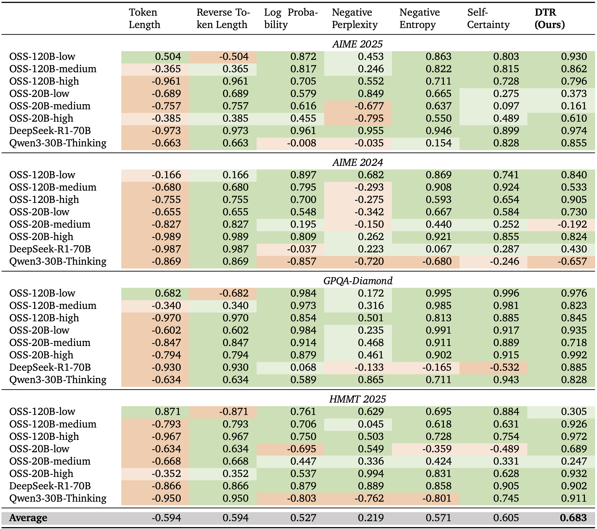
Results
In order to make this observation useful in practice, the authors propose adopting this metric in best-of-\(n\) settings, in which a subset of the \(n\) responses are sampled and a majority voting is carried out over the sampled responses. By comparing different sampling strategies (including self-consistency over all responses, mean over all responses, sampling by longest sequences, sampling by shortest sequences, sampling by self-certainty, and finally sampling by their deep-thinking ratio, denoted as think@\(n\)), the authors find consistent improvement in task performance over numerous reasoning benchmarks.
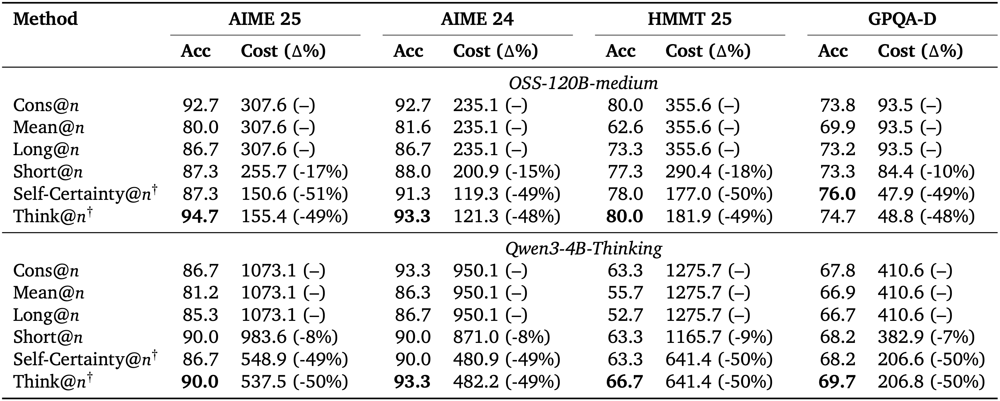
Takeaways
This work uncovers a new metric for determining how well a model is reasoning. Given the expense associated with long-context lengths, there is great value to the community to find new ways of optimising reasoning traces, and so it will be interesting to see if the ideas explored in this work end up being adopted by those training reasoning models to yield more efficient generation.
Factored Latent Action World Models
The key idea
This paper proposes Factored Latent Action Models (FLAM), a framework for learning controllable world models from action-free videos in environments that contain multiple entities acting independently. Instead of representing scene dynamics with a single latent action for the entire scene, FLAM factorizes the state into multiple entities and assigns each entity its own latent action. This reduces the complexity of modeling joint actions and improves prediction accuracy and representation quality.
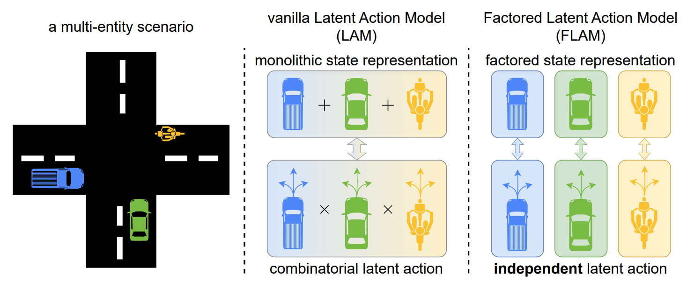
Background
World models aim to learn environment dynamics so that an agent can predict future observations and plan actions. Recently, latent action models such as Genie have allowed world models to be trained from videos without action labels. These models:
- Use an inverse dynamics model to infer a latent action explaining the transition between two frames;
- Use a forward dynamics model to predict the next frame, given the current frame and an inferred latent action.
This allows controllable dynamics to be learnt from datasets without ground truth action labels, such as unlabelled Internet videos. However, prior approaches encode all changes in the scene into a single latent action, which becomes difficult when multiple entities act simultaneously, as the latent action has to represent all combinations of actions. This causes the complexity of the action space to grow exponentially with the number of entities.
Their method
FLAM addresses this limitation by factorizing the state and action representations. The method is trained in two stages.
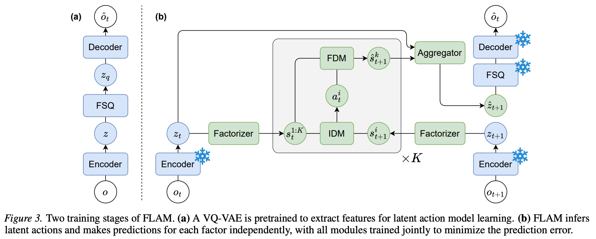
1. Feature extraction
A VQ-VAE encoder converts each video frame into discrete latent features to provide a compact representation for efficient learning. The VQ-VAE is frozen for the next stage.
2. Factorized latent action learning
The scene is decomposed into \(K\) slots (factors) using slot attention, where causal temporal attention encourages slots to bind consistently to the same object. For each slot:
- An inverse dynamics model infers a latent action that explains the change between the current and next slot state. The predicted action is regularized by sampling from a normal distribution, with KL divergence penalizing deviation of the distribution from a unit normal prior.
- A forward dynamics model predicts the next state of each slot using all the current slot states and the inferred action.
Both dynamics models are implemented using the spatiotemporal attention described in Genie, with spatial attention to all slots in the current timestep. Finally, predicted slot states are aggregated and can be decoded using the VQ-VAE back into the next video frame.
FLAM is trained end-to-end with
- Prediction loss between predicted and true frame features;
- KL regularization on latent actions, to prevent trivial copying of the next state.
Unlike prior methods, FLAM learns representation and dynamics simultaneously, encouraging slots to correspond to entities defined by independent actions rather than by visual similarity.
Results
The results show:
- Improved prediction accuracy: FLAM achieves the best results across metrics such as PSNR, SSIM, LPIPS, and FVD compared to prior latent action models and object-centric baselines.
- Successful entity factorization: The learned factors correspond closely to individual agents or correlated groups of agents.
- Robust scaling: Accuracy is stable as the number of slots increases beyond the number of independent entities, and also with an increasing number of entities in the scene.
- Improved policy learning: Latent actions inferred from video can generate pseudo action labels, to enable sample-efficient behavior cloning.
LATMiX: Learnable Affine Transformations for Microscaling Quantization of LLMs
The key idea
Block-scaled tensor formats such as MXFP use a scaling factor for each block of (e.g. 32) weights or activations, typically derived from the absolute maximum within each block. This means that the quantisation error is sensitive to outliers. While previous works reduce the error by inserting random rotations (e.g. Random Hadamard Transforms) or trained rotations (e.g. QuaRot, SpinQuant) into the compute graph, this work adopts trained invertible affine transformations. These are more expressive than rotations, and can still be folded into existing linear operations, with negligible overhead ✨.
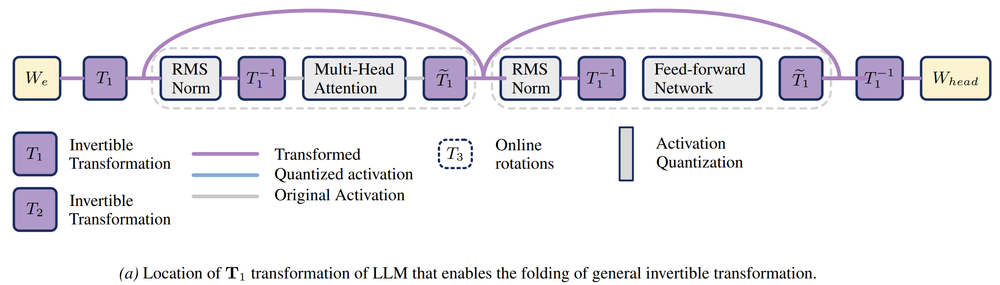
(Partial Figure 4) Compute graph showing \(T_1\), one of two affine transformations that can be entirely fused into existing weight matrices; the other transformation \(T_2\) is applied to the values in self-attention.
Background
To quantise a tensor in an MX format, typically:
- Partition the tensor into blocks (32 elements).
- Compute the absolute maximum value of each block.
- Compute the largest scale such that this absolute maximum value, divided by the scale, is within the range of the element format.
- Divide each element in the block by the scale.
- Quantise using the element format (rounding, not clipping due to step 3).
Intuitively, the presence of extreme values (often deemed outliers) within a block causes high error for other elements in that block, and makes a poor use of the representational capacity, since most indices in the block will correspond to values near zero.
Their method
The authors define an invertible affine transformation and inverse:
These pairs of transformations and inverses are inserted into the compute graph (see diagram ↑) such that the overall computation is preserved, but the MX cast operations are performed in the transformed space. Local quantisation error in the original representation space is changed from \(\mathbb{E}\left[ ||x - Q(x)||_2^2 \right]\) to \(\mathbb{E}\left[ ||x - T^{-1}(Q(T(x)))||_2^2 \right]\), an opportunity to reduce error with an appropriate choice of \(T\).
Parametrising \(T\) In order to learn an invertible \(A\), the authors define two alternative parametrisations, based on the LU or QR decomposition. In the QR case,
where \(G \in \mathbb{R}^{d \times d}\) and \(s \in \mathbb{R}^d\). \(R \in \mathbb{R}^{d \times d}\) is an upper-triangular matrix with zeros on the diagonal. In order to ensure \(A\) is invertible, it's sufficient to ensure \(\mathrm{det}(\mathrm{diag}(s))>0\), which is done by learning \(\log |s|\) and regularise \((\sum \log|s|)^2\) to be close to zero.
Not quite computationally invariant So far, I'm afraid I've told a small lie. In generalising from rotations to affine transformations, it is no longer the case that \(T_1\) and \(T_1^{-1}\) preserve the original computation, due to the nonlinear action of RMSNorm layers and the addition of a bias term \(v\). The authors resolve this by adopting a recipe akin to quantisation-aware-training, with the transformations initialised as pure rotations and trained to minimise KL divergence of the model outputs against the unquantised reference model.
Results
An analysis of the quantisation error shows a clear advantage for the full learned affine transformations of LATMiX, with low error across a wide range of block sizes:
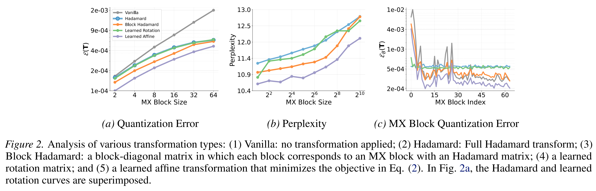
When paired with GPTQ to quantise weights after the transformations have been trained, LATMiX shows strong performance compared to the alternatives (QuaRot, SpinQuant, FlatQuant and MR-GPTQ):
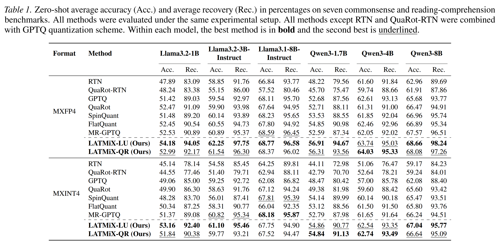
Takeaways
LATMiX is a promising technique, with strong supporting analysis and results that promote it as an improvement upon random Hadamard and learned rotations. With a very short training phase using KL divergence, it is positioned somewhat between classical post-training-quantisation techniques which use local objectives and quantisation-aware-training methods which fine-tune all parameters with a global objective.
Riemannian Mean Flow
The key idea
The authors extend the concept of average velocity introduced in MeanFlow to riemannian manifolds, allowing for one- or few-steps generation of geometric data such as protein backbones.
Background
Many scientific datasets such as protein backbones or mollecule structures, have intrinsic geometry induced by structural constraints that can't be captured with a Euclidean representation. Riemannian geometry is a natural framework to capture the intrinsic geometry of such data. Recent works extend diffusion or flow-matching models to Riemannian manifolds, learning vector fields that transport noise to data along geodesic trajectories. However, these model still present high inference cost as sampling requires numerically integrating an ODE or SDE along the manifold, typically involving tens to hundreds of neural network evaluations.
Their method
Mirroring flow map methods in the euclidean setting (Geng et al., Zhou et al., Guo et al, Boffi), the authors introduce Riemannian MeanFlow (RMF), a framework for few-step generation on Riemannian manifolds. RMF build on the idea of average velocity: the constant velocity that would transport \(x_s\) to \(x_t\) over time of \(t − s\) along a geodesic path on the riemannian manifold.
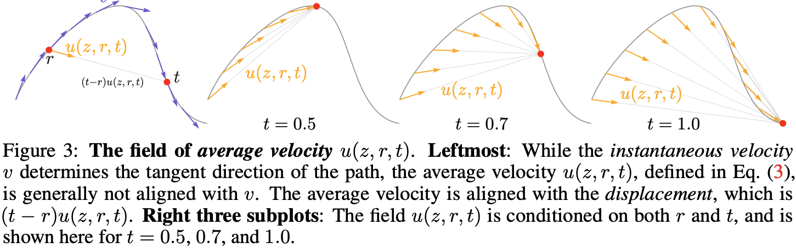
They derive 3 equivalent characterizations (or identities) of the average velocity on riemannian manifolds and derive the corresponding training objective using effective regression targets. They further propose a different parametrisation for the average velocity network: \(v\)-prediction where the output of the network is projected to the tangent space directly, the \(x_t\)-prediction where the model directly predicts the flow map and the \(x_1\)-prediction where the network is used to predict a point on the manifold and the average velocity is recovered using the logarithmic map.
Results
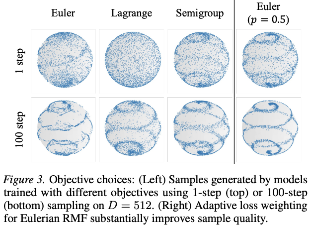
After ablating the design choices of the framework on a toy dataset (e.g. objective and ßparametrization), the authors evaluate RMF on DNA promoter design (simplex in \(\mathbb{R}^{1024\times4}\)) and protein backbone generation (\(SE(3)^N\) for \(N\) residues). In both scenarios, RMF achieves comparable or improved performance in fewer neural network evaluations than diffusion or flow matching methods.
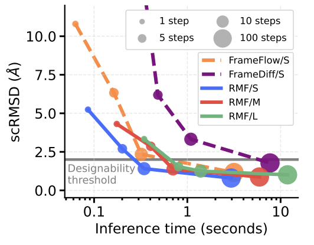
Takeaways
Riemannian MeanFlow provides a principled framework for few-step generation for geometrically constrained data allievating the inference bottleneck intrinsic to diffusion and flow matching methods. It introduces a characterization of the average velocity field on Riemannan manifolds and derives regression objectives. While showing competitive generative performance at reduced inference cost, it relies on (i) an efficient implementation of the Jacobian Vector Product (JVP) and (ii) closed form expressions of the logarithmic map partial derivatives.